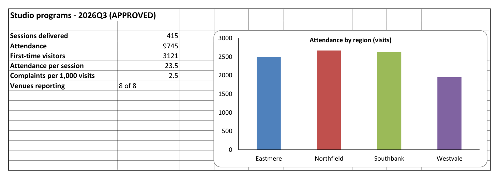
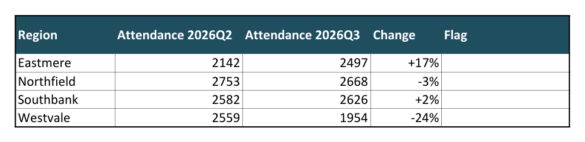

Regional Programs Analytics
Quarterly Excel reports that refuse approval while the data is incomplete, and freeze once approved.
11 automated tests. Video replayed from a real run (1.6 s).
Sixteen art studios each send a report card every three months: how many people came, how many classes ran, complaints, incidents. Someone has to combine them into reports for the director and the board. If one studio forgets to send theirs, its whole region looks like it collapsed. If a studio's numbers do not add up, or someone sends last quarter's card by mistake, or sends a corrected card without saying the old one is wrong, the report is quietly wrong. This pipeline catches each of those, builds the Excel reports anyway as drafts, and only lets the director approve when everything is in and adds up.
Regional reads one CSV per venue per quarter, takes the highest version from each venue, rejects files for the wrong quarter, and checks that every active venue reported and that category attendance adds up to the reported total. It compares like-for-like with last quarter - only venues that reported in both - and flags swings over 40% for commentary. It builds three Excel workbooks whose totals are live SUM and SUMIFS formulas, with a chart, a review pack and draft emails that are never sent. Approval copies the workbooks read-only into a versioned folder with the hashes of every input; approving again changes nothing, and a changed input after approval is caught.
Step by step
inbox/<quarter>/<venue>_v<n>.csv | One file per venue per version: attendance by category, the reported total, sessions, visitors, complaints, improvements, incidents |
Studio_<Q>.xlsx / Outreach_<Q>.xlsx | About, Summary (formulas and chart), By Venue, By Region (SUMIFS), Quarter Comparison, QA Checks |
Incidents_<Q>.xlsx | Minor and reportable incidents by venue with totals |
Review_pack_<Q>.md | The checklist, every finding and the commentary still to write |
outbox/<Q>/*.eml | Draft emails marked NOT SENT |
Predict, then see what the real run did
Every scene of the recorded run. Read what is about to happen, make a prediction, then reveal the actual terminal output. To run it yourself one scene at a time, use the CivicWorks Lab.
The database, read from its own migrations
Built by applying the project's numbered migration scripts to an empty database. Blue marks a primary key; amber arrows are foreign keys - links the database itself enforces.
region
- region_code text pk
- label text
- unique (label)
venue
- venue_id text pk
- name text
- region_code text → region.region_code
- tier text
- active integer
- unique (name)
quarter
- quarter_id text pk
- year integer
- number integer
- unique (year, number)
submission
- submission_id integer pk
- venue_id text → venue.venue_id
- quarter_id text → quarter.quarter_id
- version integer
- file_name text
- file_sha256 text
- status text
- reason text
- unique (venue_id, quarter_id)
- unique (venue_id, quarter_id, version, file_sha256)
measure
- measure_id integer pk
- submission_id integer → submission.submission_id
- metric_code text
- category text
- amount integer
report_release
- report_id integer pk
- quarter_id text → quarter.quarter_id
- version integer
- approved_by text
- approved_at text
- inputs_json text
- outputs_json text
- unique (quarter_id, version)
What it produced in the recorded run



Why it is built this way
Compare only venues present in both quarters
instead of: Comparing region totals as they standA venue that has not reported yet would look like a huge drop. That is a missing contributor, which is already flagged; it should not also look like a real change.
Live formulas in the workbook
instead of: Pasting computed numbersA reader can click any total and see exactly which venue rows it adds up.
One accepted submission per venue enforced by the database
instead of: Trusting the code to pick oneA partial unique index makes double counting impossible even if the code had a bug.
Build drafts even when blocked
instead of: Producing nothingPeople can see the state of the quarter and what is missing while approval waits.
Record input hashes at approval
instead of: Only saving the outputsIf someone edits an approved quarter's file later, the next run notices it no longer matches.
What goes wrong, and what happens
| situation | result |
|---|---|
| A venue never sends its file | missing_contributor blocks approval; the venue shows NO SUBMISSION in the draft. |
| Category attendance does not add up to the reported total | totals_reconcile blocks, naming the venue and both numbers. |
| Last quarter's file lands in this quarter's folder | Rejected as wrong_period; the venue then counts as missing. |
| Approve is run twice | ALREADY APPROVED; nothing is replaced. |
Questions it answers
In shortSo a late report does not look like attendance crashed.
In depthLike-for-like intersection of venue sets before computing change; coverage gaps are reported separately.
In shortOnly the newest version counts, and the database itself refuses a second accepted file for the same venue.
In depthHighest _vN wins; older rows status superseded; partial unique index on (venue_id, quarter_id) WHERE status='accepted'.
In shortSo anyone can click a total and see what it adds up.
In depthSUM and SUMIFS over the By Venue sheet; traceable and auditable inside Excel.
cd regional-programs-analytics pip install -e ".[dev]" python -m regional demo --out build/demo python -m pytest